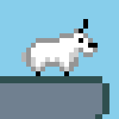
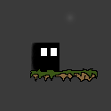

Old Jim's Game Shelf

Ludum Dare Entries
The Ludum Dare is a 48 & 72 Hour game development competition where you set out to write a game from scratch.
LD38: The Grass is Always Greener

- Theme: A Small World
- Very short, 2D platformer, event driven story
- Latest Release
LD36: The Collector
- Theme: Ancient Technology
- 2D top down, dungeon crawler, player v. environment, collect the artifacts
- Latest Release
LD34: Wayward Souls
